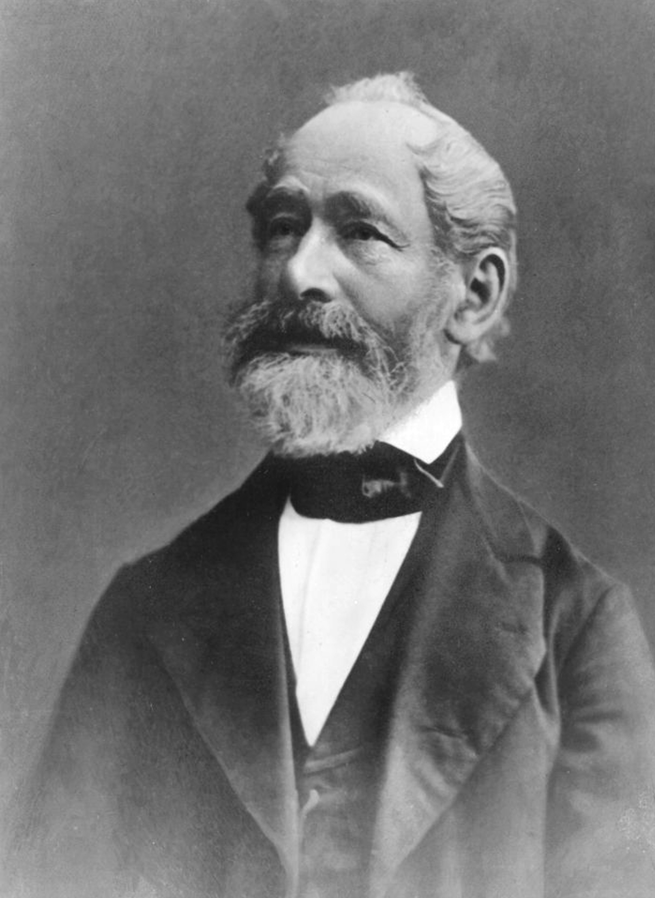
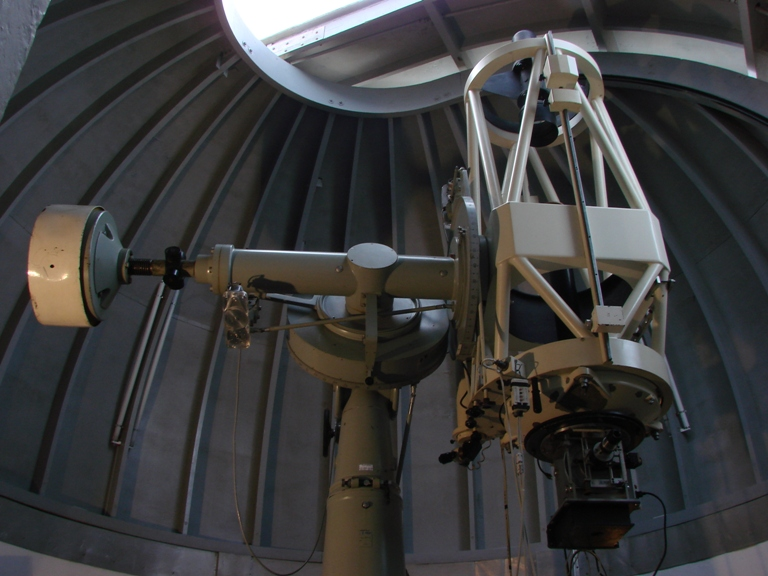

Zeiss Vision Center
Tecnologia, precisão e excelência em cuidado com a visão
O Zeiss Vision Center Chapecó é uma referência nacional em tecnologia óptica e cuidado com a visão, sendo reconhecido como o primeiro centro da ZEISS no Brasil. Destacando-se por proporcionar soluções visuais avançadas, tem consolidado a representatividade de uma das principais marcas do ramo óptico mundial no mercado brasileiro.
.jpeg)
.jpeg)

.jpeg)
O que é o ZEISS?
A Zeiss é uma empresa de desenvolvimento de equipamentos e sistemas ópticos. Fundada por Carl Zeiss no ano de 1846, em Jena, na Alemanha, iniciou suas atividades como uma pequena fabricante e vendedora de microscópios. Posteriormente, o físico Ernest Abbe e o químico Otto Schott juntaram-se à Zeiss e elevaram ainda mais a eficiência das lentes produzidas pela empresa, estabelecendo novos padrões mundiais de tecnologia e inovação e colocando a Zeiss na vanguarda da tecnologia óptica.
Atualmente, a ZEISS é reconhecida mundialmente como líder em tecnologia óptica e optoeletrônica. Responsável por diversas inovações em design e engenharia em seus campos de atuação ao longo da história, destaca-se seu pelo foco na precisão e excelência de seus produtos.


ZEISS e a Exploração Espacial
A excelência da ZEISS também ultrapassou os limites da Terra. Durante a missão Apollo 11, em 1969, que marcou a chegada do homem à Lua, equipamentos ópticos de altíssima precisão foram fundamentais para registrar esse momento histórico. As lentes utilizadas nas câmeras desenvolvidas em parceria com a NASA contavam com tecnologia avançada, alinhada aos rigorosos padrões de qualidade que consagraram a ZEISS mundialmente.
Esse marco reforça o compromisso da empresa com a inovação e a precisão, demonstrando como sua expertise em óptica contribuiu para uma das maiores conquistas da humanidade.